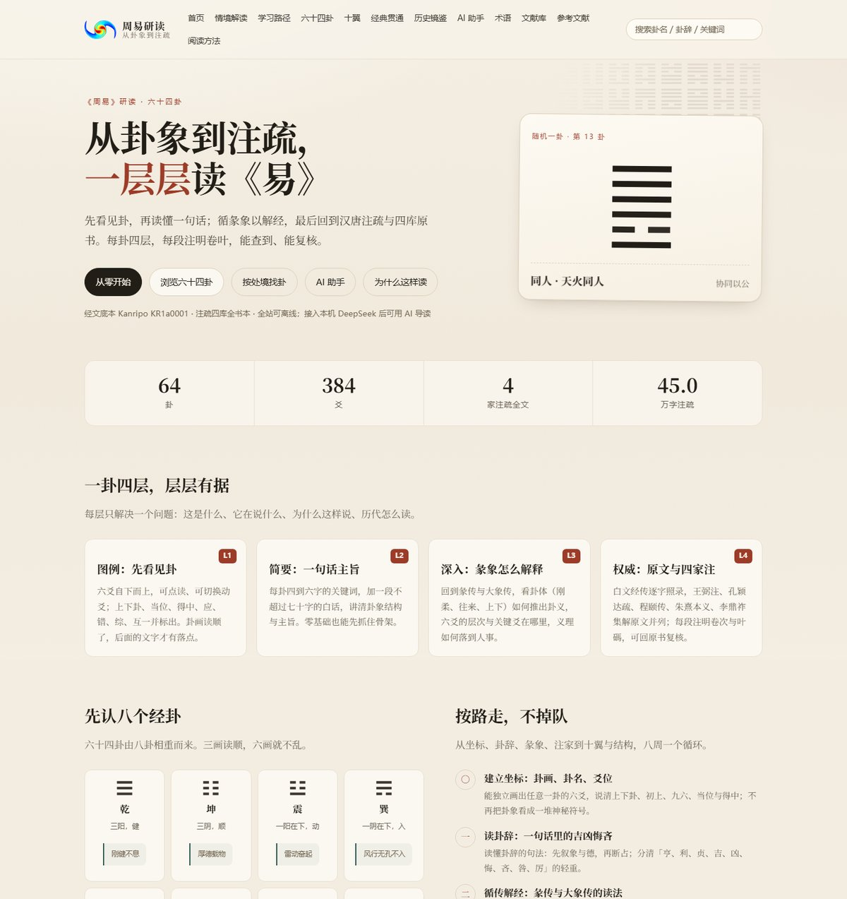
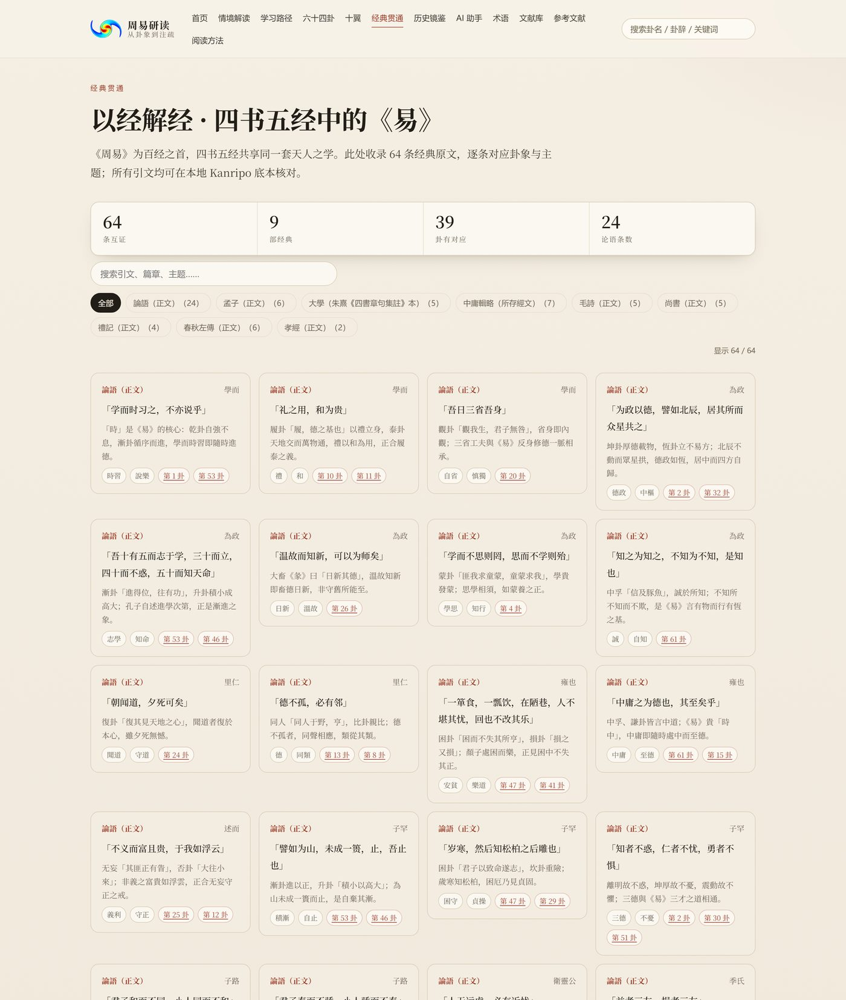
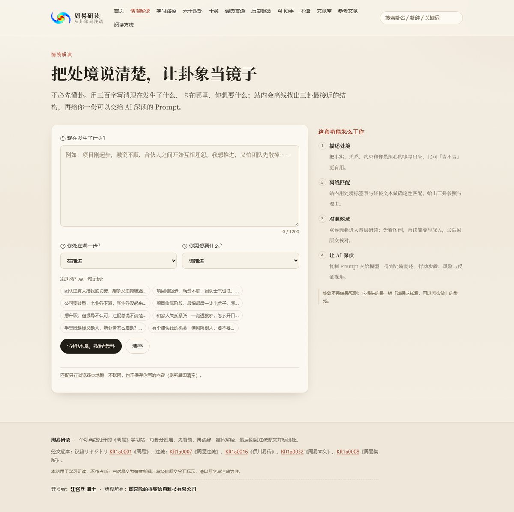

周易研读 本地静态网站
一个可离线打开的四层《周易》学习站 —— 从卦象到注疏，一层层读。
这是一个纯静态、零依赖、双击即可打开的《周易》研读网站。六十四卦每卦按 图例 → 简要 → 深入 → 权威原文 四层展开：先看见卦，再读懂一句话， 再看经传如何解释，最后回到汉唐注疏与四库原书。经传原文取自 汉籍リポジトリ（Kanripo） 的公版白文本，注疏取自四种四库全书本 （王弼注、孔颖达疏、程颐《伊川易传》、朱熹《周易本义》、李鼎祚《周易集解》）， 每段标注卷次与页码，全部可回查。除四层读法外，站内还有 情境解读、历史镜鉴、四书五经经典互证、术语表、十翼全文、参考文献与本地开源库。 页面用原生 HTML/CSS/JS 写成，可直接以 file:// 打开； 可选的 AI 助手通过本机回环代理调用 DeepSeek，密钥只留在服务端。

首页：每次打开随机抽取一卦作为入口；下方依次是四层读法、八个经卦与「以经解经」经典互证入口。
主要功能
64 卦 · 384 爻 · 960 条经传 · 7,835 段注疏 · 449,591 字 · 64 条经典互证 / 9 部经典 · 25 个史例 · 7 个 Kanripo 仓库 / 166 个文件 · 纯静态零依赖
页面掠影

经典贯通：64 条四书五经引文逐条回查 Kanripo 原文，按经典与卦号双向筛选。

情境解读：先用离线标签匹配三卦，再把「处境 + 候选卦 + 原文材料」交给 AI 深读。
每卦底部的经典互证：同一处境在《论语》《孟子》《大学》等经典中的另一种说法。
获取与运行
- 纯静态站点：双击 zhouyi-learning\index.html 即可离线阅读（file:// 下 AI 不可用）。
- 也可启动本机服务：双击 zhouyi-learning\启动网站.bat，或在项目目录运行 node scripts/ai-server.mjs（默认端口 8788）。
- 服务就绪后，点击下方按钮在浏览器打开站点；AI 助手需要 config/deepseek.local.json 中的本机 DeepSeek 密钥（该文件已加入 .gitignore，不会上传）。
如果按钮没有反应：说明本机服务尚未启动。请先双击 启动网站.bat，或在项目目录执行 node scripts/ai-server.mjs，再回到本页点击。
数据来源与校验
- 经传底本：汉籍リポジトリ KR1a0001《周易》白文本（公版，逐卦分文件）。
- 注疏四种：KR1a0007《周易注疏》（王弼注、唐孔颖达疏）、KR1a0016《伊川易传》（宋程颐）、KR1a0032《周易本义》（宋朱熹）、KR1a0008《周易集解》（唐李鼎祚），均为四库全书本影印数字底本。
- 四书五经互证：论语、孟子、大学、中庸、诗经、尚书、礼记、左传、孝经共 9 个 Kanripo 仓，64 条引文逐字回查原文并标卷页。
- 自动校验：经传 960 条逐字比对 64/64 通过；注疏 7,835 段按卷页回查 562/562 条引文通过；结构数理 448 项通过；布局 8 视口 × 14 路由无横向溢出；10 项审计脚本 + 83 条端到端断言全部通过。
- 使用边界：本站用于学习研读，不作占断。白话释义与「以经解经」编者按为作者所撰，与经传原文分开标注；注明「编者所撰」的内容不代表任何注家原意。
兼容性说明：站点以纯静态文件分发，无后端依赖；AI 代理仅监听本机回环地址。 本介绍页与软件列表中的其他软件采用同一版式，方便未启动本机服务时了解软件内容。